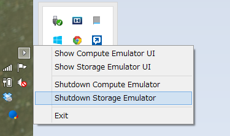
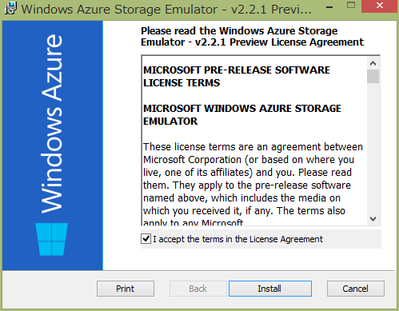
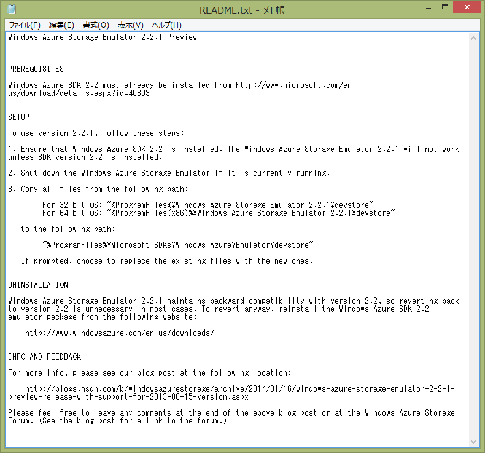
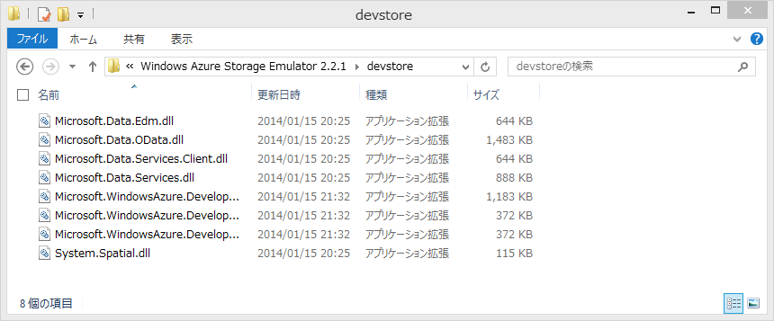
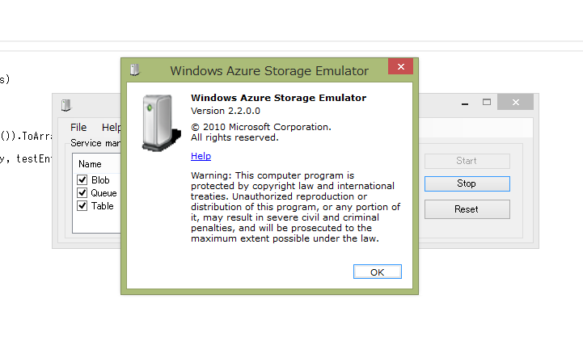

Windows Azure Storage Emulator 2.2.1 Preview
Azure Storage 愛好者待望の、Azure Storage Emulator の 2013-08-15 version サポートがリリースされました。（まだ、preview ですが）
Windows Azure Storage Emulator 2.2.1 Preview Release with support for “2013-08-15” version
Windows Azure Storage Emulator 2.2.1 Preview Release の MSI package は、ここからダンロードできます。

インストールの手順
この release では、Windows Azure SDK 2.2 が予めインストールされている必要があります。これは preview release で、インストーラーは、Windows Azure Storage Emulator 2.2 のバイナリーを自動では入れ替えません。代わりに、32bit OSでは、"%ProgramFiles%\Windows Azure Storage Emulator 2.2.1\devstore"に、64 bit OSでは"%ProgramFiles(x86)%\Windows Azure Storage Emulator 2.2.1\devstore"にバイナリーを展開します。
更新されたエミュレータ(2.2.1 preview)を利用する場合は下記のステップを踏んでください。
- Storage Emuratorの停止
- "%ProgramFiles%\Microsoft SDKs\Windows Azure\Emulator\devstore"にある既存のファイル(2.2)を他のディレクトリに保存
- 新たにインストールされた2.2.1 preview のファイルを"%ProgramFiles%\Microsoft SDKs\Windows Azure\Emulator\devstore"へ上書き
以前のエミュレータ(2.2)に戻す場合は、Storage Emuratorを停止して保存したファイルを戻します。この方法で、簡単に2.2のStorage Emuratorに戻すことができ、SDK 2.2の再インストールなどは必要ありません。
これはちょっと手間ですが、Windows Azure Storage Emulator 2.2.1 Preview Release with support for “2013-08-15” versionによると、preview のための暫定的な処理のようです。
Do It
やってみます。まず、最初にAzure Storage Emulatorが動いていたら止めます。
Windows Azure Storage Emulator 2.2.1 Preview Release の MSI package を、ここからダンロードしてきてインストールします。
インストールが終わると、README.txt が表示されます。上に書いたようなことが書いてあります。
手元はx64環境なので、"%ProgramFiles(x86)%\Windows Azure Storage Emulator 2.2.1\devstore"にファイルが有るかを確認します。インストーラーは、ここにファイルを展開しますが、ここだと実行されません。これから規定の場所にコピーします。
問題無さそうなので、"%ProgramFiles%\Microsoft SDKs\Windows Azure\Emulator\devstore"のファイルをZIPで固めて避難してから、2.2.1のファイルをコピー上書きします。
確認
まずはStorage Emulatorを実行して起動を確認します
普通に Windows Azure Storage Emulator - v2.2 のショートカットをクリックする方法以外に、下記のようにコマンドラインから起動をすることも出来ます。
$ .\csrun.exe /devstore
Windows(R) Azure(TM) Desktop Execution Tool version 2.2.0.0
for Microsoft(R) .NET Framework 4.0
Copyright c Microsoft Corporation. All rights reserved.
Starting the storage emulator...
$
起動してきたので、念のためバージョン番号を確認します。残念ながら変わっていません…
次にJSONでアクセスしてみます。Install-Package WindowsAzure.Storage後、下記のようなコードを書いて実行します。
using System;
using System.Linq;
using Microsoft.WindowsAzure.Storage;
using Microsoft.WindowsAzure.Storage.Table;
namespace WASE221pre
{
public static class Program
{
public static void Main(string[] args)
{
var acct = CloudStorageAccount.DevelopmentStorageAccount;
var tableClient = acct.CreateCloudTableClient();
var table = tableClient.GetTableReference("TestTable");
table.CreateIfNotExists();
var entity = new TableEntity
{
PartitionKey = "pk",
RowKey = string.Format("rk{0}", DateTime.UtcNow.Ticks)
};
table.Execute(TableOperation.Insert(entity));
var rows = table.ExecuteQuery(new TableQuery<TableEntity>()).ToArray();
foreach (var testEntity in rows)
Console.WriteLine("{0}, {1}", testEntity.PartitionKey, testEntity.RowKey);
}
}
}
<?xml version="1.0" encoding="utf-8"?>
<packages>
<package id="Microsoft.Data.Edm" version="5.6.0" targetFramework="net451" />
<package id="Microsoft.Data.OData" version="5.6.0" targetFramework="net451" />
<package id="Microsoft.Data.Services.Client" version="5.6.0" targetFramework="net451" />
<package id="Microsoft.WindowsAzure.ConfigurationManager" version="1.8.0.0" targetFramework="net451" />
<package id="Newtonsoft.Json" version="5.0.8" targetFramework="net451" />
<package id="System.Spatial" version="5.6.0" targetFramework="net451" />
<package id="WindowsAzure.Storage" version="3.0.2.0" targetFramework="net451" />
</packages>
実行結果
$ WASE221pre.exe
pk, rk635265773262439816
pk, rk635265773303542415
pk, rk635265773965590960
pk, rk635265774455960355
pk, rk635265824937388844
上手く行きました。（何度か実行したので複数のエンティティがあります）
本当にJSONで流れているのかどうか念のために確認します。
接続文字列を、"UseDevelopmentStorage=true;DevelopmentStorageProxyUri=http://ipv4.fiddler"に変更します。
// var acct = CloudStorageAccount.DevelopmentStorageAccount;
var acct = CloudStorageAccount.Parse("UseDevelopmentStorage=true;DevelopmentStorageProxyUri=http://ipv4.fiddler");
実行してCaptureを確認します。
リクエスト
GET http://127.0.0.1:10002/devstoreaccount1/TestTable?timeout=90 HTTP/1.1
User-Agent: WA-Storage/3.0.2 (.NET CLR 4.0.30319.34003; Win32NT 6.3.9600.0)
x-ms-version: 2013-08-15
Accept-Charset: UTF-8
MaxDataServiceVersion: 3.0;NetFx
Accept: application/json;odata=minimalmetadata
x-ms-client-request-id: a4ed326b-e3a6-43f9-bb6e-8fb295014473
x-ms-date: Wed, 29 Jan 2014 09:04:42 GMT
Authorization: SharedKey devstoreaccount1:7Wt86EphqhTZTwLxkMrAkPGNV9WDSKa0df5Feaw8zkU=
Host: 127.0.0.1:10002
レスポンス
HTTP/1.1 200 OK
Cache-Control: no-cache
Transfer-Encoding: chunked
Content-Type: application/json;odata=minimalmetadata;streaming=true;charset=utf-8
Server: Windows-Azure-Table/1.0 Microsoft-HTTPAPI/2.0
x-ms-request-id: fdd3f33e-e2d7-401e-a4c6-7654bd7ae584
x-ms-version: 2013-08-15
X-Content-Type-Options: nosniff
Date: Wed, 29 Jan 2014 09:04:42 GMT
285
{"odata.metadata":"http://127.0.0.1:10002/devstoreaccount1/$metadata#TestTable","value":[{"PartitionKey":"pk","RowKey":"rk635265773262439816","Timestamp":"2014-01-29T07:28:46.35Z"},{"PartitionKey":"pk","RowKey":"rk635265773303542415","Timestamp":"2014-01-29T07:28:50.513Z"},{"PartitionKey":"pk","RowKey":"rk635265773965590960","Timestamp":"2014-01-29T07:29:56.707Z"},{"PartitionKey":"pk","RowKey":"rk635265774455960355","Timestamp":"2014-01-29T07:30:45.74Z"},{"PartitionKey":"pk","RowKey":"rk635265824937388844","Timestamp":"2014-01-29T08:54:54.147Z"},{"PartitionKey":"pk","RowKey":"rk635265830822644693","Timestamp":"2014-01-29T09:04:42.46Z"}]}
0
無事に動いていることを確認できました。
最後に
preview ですが、Storage Emulatorが 2013-08-15 versionをサポートし、軽くですがJSONでのアクセスが動くことを確認できました。12月のWindows Azure Storage Client Library for C++ Previewでは、2013-08-15 version 対応のStorage Emulator が、来月には出せそうということだったので、ほぼ予定通りですね。どうしても手元で確認したい場合は、Storage Emulator 2.2.1 previewを使って、そうでない場合は本番を利用して開発ということになりそうです。